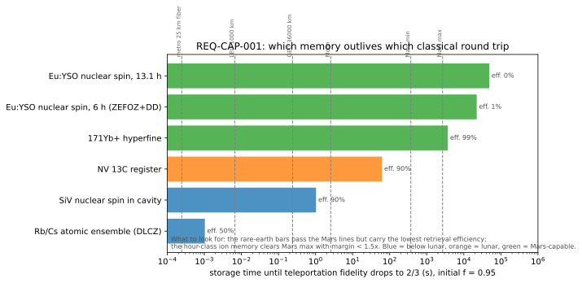
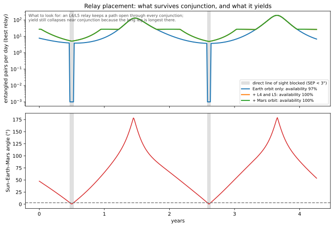
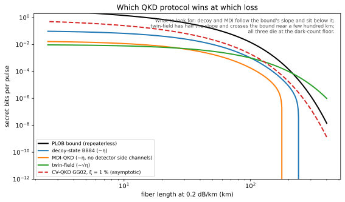
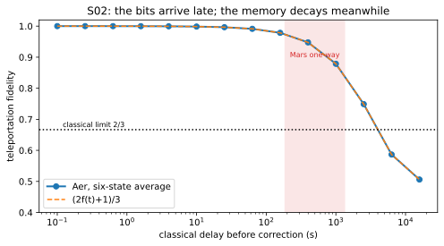
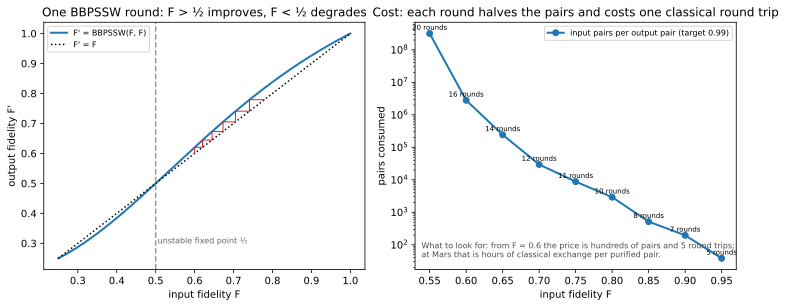
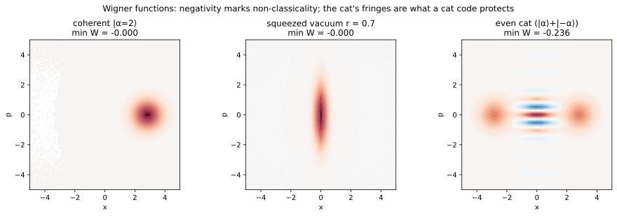

Physics says yes, with one catch: entanglement carries no message, and the two classical bits every teleportation needs take minutes at the speed of light. This project computes what that catch costs, what hardware can pay it, and what a student can build on the way, in code that is tested against the equations.
Generated into site_data.json by scripts/build_site_data.py on every commit. Change the physics and the page changes with it.
Each is implemented in a module with an analytic test; the value shown is the module's output.
Heralded entanglement and teleportation over deployed fiber; herald round trip 0.25 ms. Done in the field in 2024; our version starts on a bench.
A single-photon downlink from low orbit; the Micius budget reproduced within 3 dB; rooftop link, then a ground station.
The same protocol with a 6–45 minute round trip and 10⁻⁹ loss. Done nowhere. Our version: delayed bits, relay scheduling, a messenger that fails closed.
CHSH vs noise, teleportation with delayed bits, link budgets, repetition codes, key per pass, device-independent certification under latency, transduction trade, multiplexing at AU scale.
8 protocolsODMR on a $170 diamond bench, pulsed NV control, an SPDC Bell source, a rooftop link, anticorrelation, a quantum eraser, BB84 over fiber with quantum-random bases, time-bin encoding.
A Bell pair of fraction 0.95 stored in each demonstrated memory, decaying by the exact Kraus map, compared with the classical round trip of each baseline. Only hour-class ions and rare-earth crystals reach Mars, and the crystals pay for it in retrieval efficiency.
Loading the capability matrix…
Apply gates and watch the state move. Drag to rotate the view. The amplitudes are multiplied exactly; probabilities follow the Born rule.
Try H, then T eight times: the arrow goes once around the equator. Try H Z H: it is an X.
Each pixel sums the two waves from the slits exactly. Move the pointer across the field to shift their relative phase; tick which-path and the cross term vanishes, the same physics as protocol P06, the quantum eraser.
Orbits, conjunction, L4/L5 relays, and which memories survive today's round trip.
explainerScroll through the protocol with the exact eight-amplitude state, the no-signalling average, and the bits in flight.
dashboardTwo synodic periods of light time, blackouts, and a fail-closed messenger's key buffer, live.
explorersThermal occupation, beam loss, light time, key rates, Bloch gates — parameters under your hands.
Foundations, computing core, eight qubit platforms, communication — each with equations, a figure, references, and exercises.
55 filesFlagships, protocols, fifteen landmark experiments with cheap recreations, fifteen proposals, lessons from the field.
40 filesTimeline, open problems, watchlist, fifteen frontier theories, the design process, and the thesis chapters.
Fifteen weeks with readings, computations, labs, and four problem sets graded by machine.
300+ refsEvery citation in code must exist in the bibliography; a test enforces it.
Verified videos in English, one row per topic, mapped to the file they accompany.





